| المدينة | الالقاب | الاندية |
|---|---|---|
| تورينو | 43 | يوفنتوس (36)، تورينو (7) |
| ميلانو | 37 | إنتر ميلان (19)، ميلان (18) |
| جنوة | 10 | جنوة (9)، سامبدوريا (1) |
| بولونيا | 7 | بولونيا (7) |
| فيرتشيلي | 7 | برو فيرتشيلي (7) |
| روما | 5 | روما (3)، لاتسيو (2) |
| فلورنسا | 2 | فيورنتينا (2) |
| نابولي | 2 | نابولي (2) |
| كالياري | 1 | كالياري (1) |
| كازالي مونفيراتو | 1 | كاسالي (1) |
| نوفي ليغوري | 1 | نوفيسي (1) |
| فيرونا | 1 | هيلاس فيرونا (1) |
| الأقليم | الألقاب | الأندية |
|---|---|---|
| بييمونتي | 52 | يوفنتوس (36)، تورينو (7)، برو فيرتشيلي (7)، كاسالي (1)، نوفيسي (1) |
| لومبارديا | 37 | إنتر ميلان (19)، ميلان (18) |
| ليغوريا | 10 | جنوة (9)، سامبدوريا (1) |
| إميليا-رومانيا | 7 | بولونيا (7) |
| لاتسيو | 5 | روما (3)، لاتسيو (2) |
| كامبانيا | 2 | نابولي (2) |
| توسكانا | 2 | فيورنتينا (2) |
| سردينيا | 1 | كالياري (1) |
| فينيتو | 1 | هيلاس فيرونا (1) |
اهداف مباراة ميلان ولاتسيو 1-1| 13-02-2017
شعار البطولة
 شعار البطولة من 1997 حتى 2010
شعار البطولة من 1997 حتى 2010
 شعار البطولة من 2016 حتى 2021
شعار البطولة من 2016 حتى 2021
| الموسم | اللاعب | النادي | عدد الاهداف |
|---|---|---|---|
| 2009–10 |  أنتونيو دي ناتالي |
أودينيزي | 29 |
| 2010–11 | أنتونيو دي ناتالي |
أودينيزي | 28 |
| 2011–12 |  زلاتان إبراهيموفيتش |
ميلان | 28 |
| 2012–13 |  إدينسون كافاني |
نابولي | 29 |
| 2013–14 |  تشيرو إيموبيلي |
تورينو | 22 |
| 2014–15 |  لوكا توني  إيكاردي ماورو |
هيلاس فيرونا إنتر ميلان |
22 |
| 2015–16 |  غونزالو هيغواين |
نابولي | 36 |
| 2016–17 |  إدين دجيكو |
روما | 29 |
| 2017–18 | ماورو إيكاردي تشيرو إيموبيلي |
إنتر ميلان لاتسيو |
29 |
| 2018–19 |  فابيو كوالياريلا |
سامبدوريا | 26 |
| 2019–20 | تشيرو إيموبيلي |
لاتسيو | 36 |
اهداف مباراة ميلان وروما 2-1
احدث بطل هو : إنتر ميلان (اللقب ال19)

| مرات الفوز | ||
|---|---|---|
| 36 | يوفنتوس | |
| 19 | انتر ميلان | |
| 18 | ميلان | 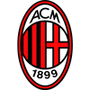 |
| 9 | جنوى | 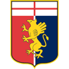 |
| 7 | تورينو | 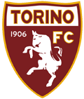 |
| 7 | بولونيا | 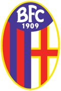 |
| 7 | برو فيرتشيلي |  |
| 3 | روما | 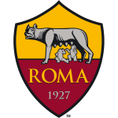 |
| 2 | لاتسيو | 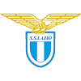 |
| 2 | نابولي |  |
| 2 | فيورنتينا |  |
| 1 | سامبدوريا |  |
| 1 | هيلاس فيرونا | 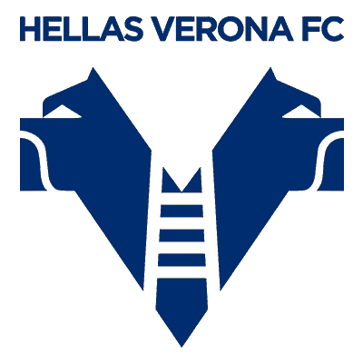 |
| 1 | كالياري |  |
| 1 | كاسالي | 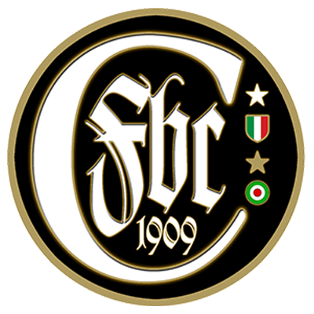 |
الموقع الرسمي للدوري الايطالي
click here
اندية الدوري الايطالي
قبل عام 1929، تنافست الكثير من الأندية على لقب الدوري (65 فريق) وذلك عن طريق البطولات الإقليمية والتي تشابهها إلى أن تم تغيير نظام الدوري عام 1929. القائمة التالية توضح الفرق التي نافست ولعبت في الدوري الدرجة الأولى منذ عام 1929. عدد المشاركات في الدرجة الأولى هناك 67 فريقًا شاركوا في 88 بطولة دوري الدرجة الأولى الإيطالي من موسم 1929–30 وحتى موسم 2020–21. الفرق بالخط الغامق مشاركة في دوري الدرجة الأولى الإيطالي حاليا. إنتر ميلان هو الفريق الوحيد الذي لعب في الدوري الإيطالي الدرجة الأولى في كل المواسم:
1 موسم واحد: كاربي، بيستويسي، سبيزيا، تريفيزو 2 موسمين: أنكونا، بينيفينتو، ساليرنيتانا، ساليرنيتانا، ترنانا 3 مواسم: كروتوني، ليكو، لنيانو، ريجيانا 4 مواسم: كاسالي 5 مواسم: ميسينا 6 مواسم: برو فيرتشيلي 7 مواسم: كاتانزارو، كريمونيسي، مانتوفا، بيسكارا، بيزا، فاريسي 8 مواسم: لوكيزي، بياتشينزا، سامبدوريا، ساسولو 9 مواسم: ريجينا، سيينا 10 مواسم: أفيلينو 11 موسم: فوجيا 12 موسم: برو باتاريا، فينيزيا 13 موسم: أليساندريا، تشيزينا، كومو، إمبولي، مودينا، بيروجيا، نوفارا 16 موسم: أسكولي، ليتشي، بادوفا 17 موسم: كاتانيا، كييفو 18 موسم: ليفورنو 19 موسم: سبال 23 موسم: بريشيا 26 موسم: تريستينا 27 موسم: بارما 29 موسم: باليرمو 30 موسم: باري، هيلاس فيرونا، فيتشينزا 41 موسم: كالياري 48 موسم: أودينيزي 54 موسم: جنوة 60 موسم: أتالانتا 64 موسم: سامبدوريا 74 موسم: بولونيا 75 موسم: نابولي 77 موسم: تورينو 78 موسم: لاتسيو 83 موسم: فيورنتينا 87 موسم: ميلان 88 موسم: يوفنتوس، روما 89 موسم: إنتر ميلان
players

Lautaro Martínez
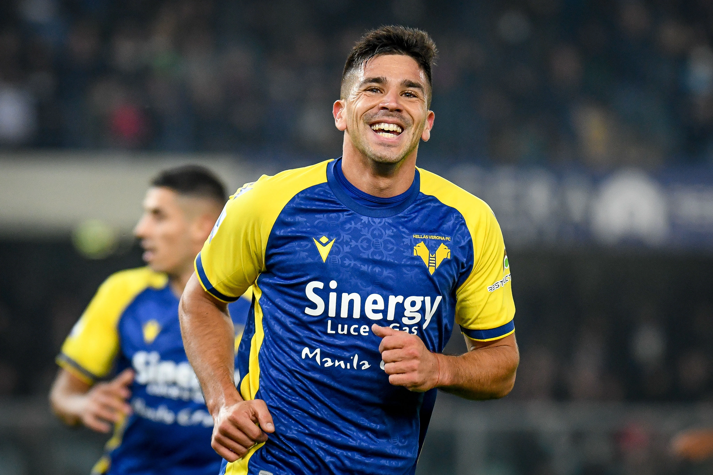
Giovanni Simeone
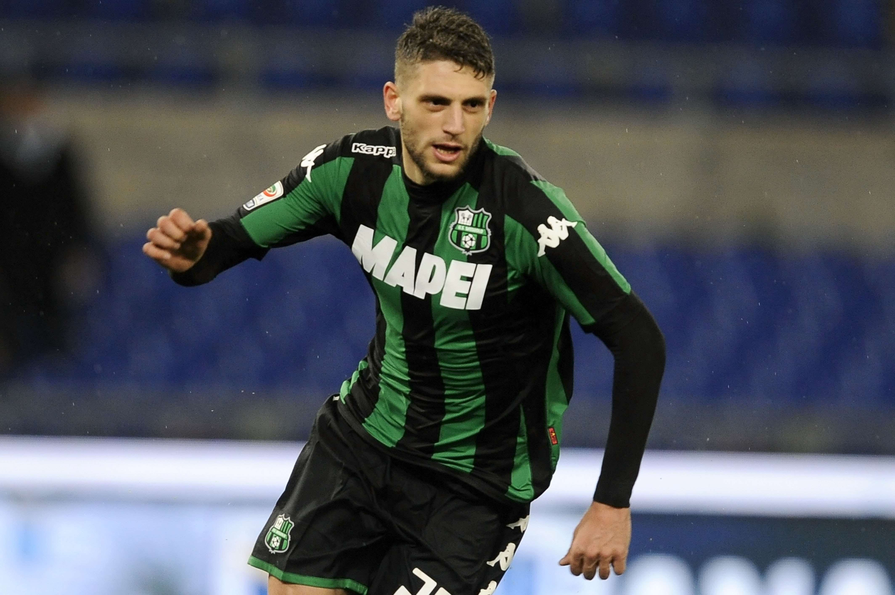
Domenico Berardi
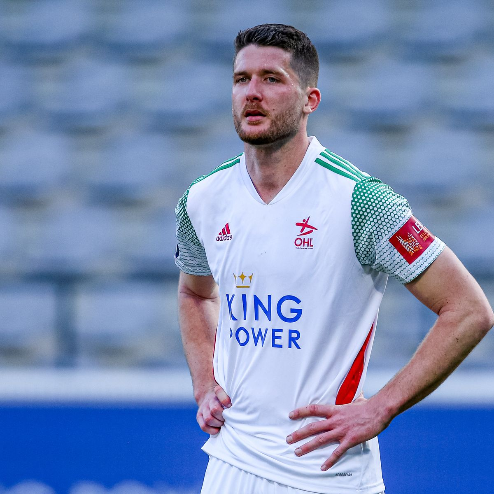
Thomas Henry
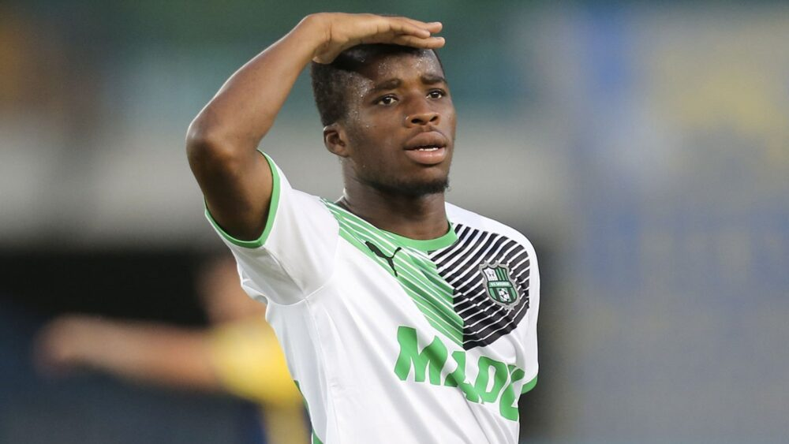
Hamed Traorè
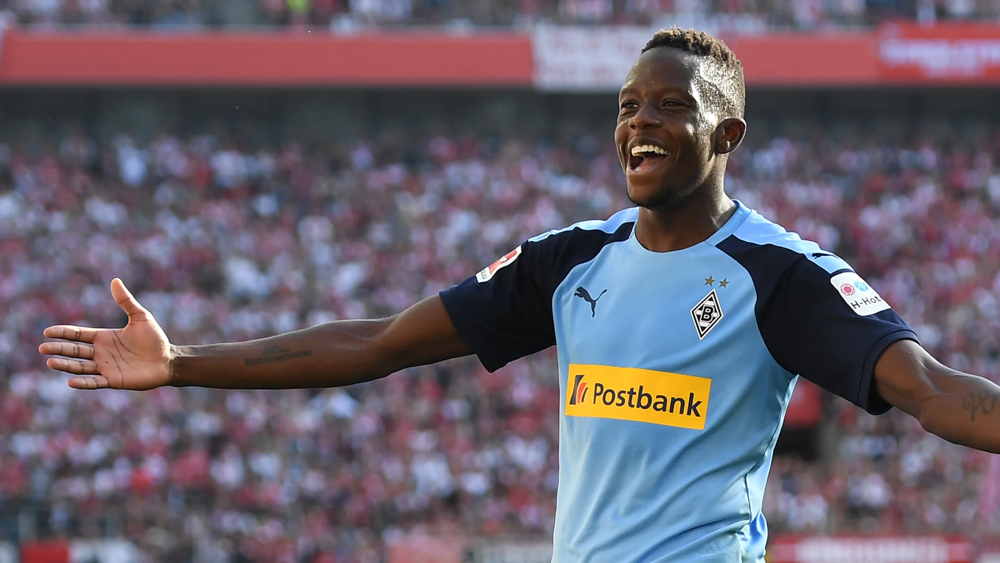
Denis Zakaria
>
جدول ترتيب هدافي الدوري الايطالي موسم 2021-2022
| المركز | اسم اللاعب | الفريق | رصيد الاهداف |
|---|---|---|---|
| 1 | تشيرو ايموبيلي | لاتسيو | 25 |
| 2 | دوشان فلاهوفيتش | يوفنتوس | 23 |
| 3 | جيوفاني سيميوني | هيلاس فيرونا | 16 |
| 4 | تامي أراهام | روما | 15 |
| 4 | لاوتارو مارتينيز | الانتر | 15 |